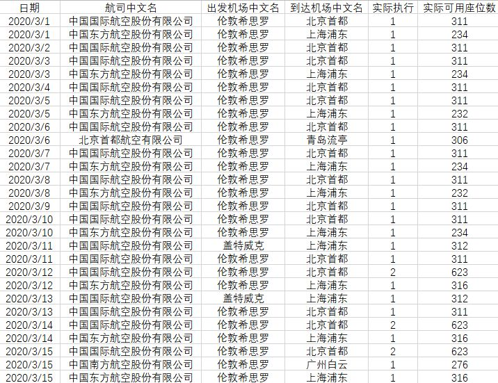

疫情重创航空业，机票惊现0.3折“白菜价”
原文链接 备份链接 疫情影响下航空客流大幅下滑 航空公司面临较大经营压力 随着疫情在多国蔓延，全球对航空旅行的需求急剧下降，这使很多本就苦苦挣扎的航空公司陷入困境。 3月5日，英国航空公司Flybe宣布破产，成为第一家被疫情拖垮的航 …

欧洲疫情不断扩散，英国确诊病例迅速增加，由于部分航班取消，在英留学生想马上回国并不容易

文丨《财经》记者 陈亮 王静仪
编辑丨施智梁
英国疫情蔓延近日明显加速。截至3月15日，英国新冠肺炎确诊病例数已达1372例，与前一天公布的数字相比增加232例；单日新增死亡病例14例，为有疫情以来增幅最大，累计死亡病例达35例。
面对英国政府推行的应对疫情相关政策，部分在英留学生陷入恐慌，立即准备返回中国，但很快他们就发现，回国的道路并不那么畅通。
近日国际机票价格飞涨，一张从伦敦到上海的机票从5000元飙升到了3万多元。飞涨的价格也挡不住回国的迫切需求。3月份伦敦至北京和上海的直飞机票已经全部售罄。
《财经》记者获悉，东方航空每天一班的伦敦至上海航线客座率达105%，3月23日、24日、26日、27日伦敦盖特威克至上海客座率达102%，全部处于超售状态。
近期有航空公司还取消了部分航班，让英国留学生回国之路更加艰难。3月16日从伦敦飞往北京的两班航班已被取消，国航相关人士向《财经》记者证实，确实取消了一些航班。
挣扎抢票
“一觉醒来我就开始抢票了。”在伦敦政治经济学院读研的张叶告诉《财经》记者。
英国当地时间3月12日，张叶收到学校邮件，所有课程都变成网上授课，就连毕业考试也转移到了线上。得知这个消息后，张叶身边的中国同学都开始买起了机票，宿舍也退了。原计划在英国实习的张叶当时还决定留守英国。
3月13日清晨，张叶看到英国相关防疫政策后陷入恐慌。既怕在英国感染，又怕自己在10平米房间内蜗居数月得抑郁症，加上国内父母的催促，张叶决定买票回国。
虽然父母让张叶不要考虑票价，但看着3月中下旬1万5到3万人民币的机票，张叶还是下不去手。张叶看中了一张4月往返机票，价格在6000元人民币。就在犹豫要不要返回英国之时，一个小时内上述往返机票价格从6000元人民币涨至8000元人民币。
最终张叶选择了一张4月初从伦敦回上海的单程机票，售价5000元人民币。3天后，4月10日前所有伦敦到上海的机票都售罄了。
庆幸的感觉还没温存多久，国内航司取消航班的消息在留学生群内炸锅。
中国国航app上显示，3月16日一共有三班从伦敦希斯罗机场飞往北京首都机场的航班，其中原计划于当地时间12：05和17：40起飞的两班已被取消，只剩下20：25起飞的CA938，CA938的前序航班已从北京首都机场起飞。
除上述航班外，3月18日CA856、3月21日CA848等伦敦前往北京的航班也被取消了。3月17日至3月19日从伦敦到北京的航班基本从每天三班减少到每天一班。
作为代表国家的载旗航空公司，国航需要承担两国之间不断航的任务，这意味着即使遇到紧急情况，国航也将保留中英航线的至少一班航班。
可以参考的是，此前由于疫情原因，美国禁止过去14天内到过中国的非美国公民进入美国境内，多家美国航空公司暂停了中美航班，但国航承担起两国不停航的任务，实现每天一班航班飞往美国。
话虽如此，但留学生们仍担心后续其他公司是否会把航班取消掉。

入境后需隔离
如果能踏上回国的飞机，那只是留学生万里长征第一步。后续还有入境关要过。
中国民用航空局飞行标准司司长朱涛介绍，民航局对航班疫情风险进行综合评分，划分为高中低三个等级，根据不同等级采取不同的防控措施：
对于低风险的航班，主要保障人流物流的畅通，根据需要进行体温检测，机组佩戴一般的医用口罩。
中风险航班，合理安排客舱布局，减少人员流动，同时航程过程中对旅客进行体温检测，机组使用医用外科口罩。
高风险航班，尽可能的减少机上服务流程，对旅客进行分区管理，安排旅客分散就座。
在涉及国际（地区）疫情重点航线上，航空公司进一步加强了航班疫情防控措施。
东方航空的国际回程航班将在机舱门口测量每一位旅客的体温，对体温超过标准的旅客进行重点监控。地面及空中服务部门将按照当地卫生部门和机场的防疫要求，落实好旅客体温检测和信息申报。
一旦航班中发现疑似病例或发热旅客，机组在航班落地前半小时依据目的地口岸要求和现有流程通知目的地机场海关；航班中设立后客舱最后三排右侧座位作为航空器隔离点，尽可能将疑似或发热旅客安置在右侧靠窗位置，航班中发现疑似病例或发热旅客要简化服务程序，安排专门乘务员穿戴防护用品为疑似或发热旅客服务。
到达国内机场后，重点国际（地区）旅客将要面临入境关。
中国另一大门户机场浦东国际机场，则将重点旅客转运流程前移到了停机坪上。
重点国家（地区）航班落地停靠相对固定机位或廊桥后，上海海关实施登临检疫、体温筛查、信息查验等入境检疫流程，发现发热或疑似新冠肺炎旅客后，由机场通知现场等待的120救护车直接从机坪转运至属地指定医疗机构就诊。
无症状旅客经入境检疫后，海关和边检部门针对来源地依据检疫、筛查标准，逐一对每一位旅客对标检查，按分类在旅客所持护照上粘贴红黄绿三种颜色标签。
红黄颜色标签旅客一律隔离，机场会同航空公司、上海16个区驻在机场工作人员、邻省驻在机场工作人员，将上述旅客分别送到集中隔离点、居家隔离中转点；对途径上海的空铁中转旅客，机场方面提供短驳运送，由现场工作人员及时通知航空公司、火车站，派车派人将不同目的地、不同中转方式的旅客送交到值机点、火车站，做到面对面交接、封闭式管理。护照贴有“绿标”的旅客引导至放行通道。
北京则采取了首都机场从3月10日起正式启用3号航站楼D区作为集中接受疫情严重国家和地区进港航班的处置专区，分区分类、精准实施旅客和行李的集中转运。
D区建筑面积约为10万平米，位于C区和E区中间，从空间上实现了与其他航班旅客隔离，最大限度防止机场内混流导致的交叉传染。
当疫情严重国家和地区的航班进港后，首都机场统一安排航班停放在专属停机位，所有机上旅客经由海关进行测温等检疫排查，边检办理入境手续，非中转旅客在专属休息区等候摆渡车前往新国展旅客接驳区；中转旅客在办理完中转手续后，再前往专属休息区候机。
对于入境过程中发现的体温异常旅客，首都机场也设置了专门的转运程序和路线，以避免与其他旅客发生接触。
3月16日，北京市所有境外进京人员，均转送至集中观察点进行14天的隔离观察，集中隔离观察期间，隔离人员费用需自理。
（应受访者要求，张叶为化名）

▲点击图片查看更多疫情报道
责编 | 蒋丽 lijiang@caijing.com.cn
本文为《财经》杂志原创文章，未经授权不得转载或建立镜像。如需转载，请在文末留言申请并获取授权。
原文链接 备份链接 疫情影响下航空客流大幅下滑 航空公司面临较大经营压力 随着疫情在多国蔓延，全球对航空旅行的需求急剧下降，这使很多本就苦苦挣扎的航空公司陷入困境。 3月5日，英国航空公司Flybe宣布破产，成为第一家被疫情拖垮的航 …
原文链接 备份链接 青岛、威海等城市并未出现传闻中“大批韩国人来华躲避疫情”的现象，但山东各地已经相继采取措施，防止在韩国愈演愈烈的疫情波及山东半岛 文 |《财经》记者 马霖 杨立赟 陈亮 吴琼 编辑 | 余乐 近期新冠疫情在韩国蔓延， …
原文链接 备份链接 记者：陈晓双 “ 金鹿航空推出了3月18日伦敦-日内瓦-上海航线的787公务机行程，共40个座位，单个座位售价18万元起，迅速卖光。 ” 随着境外疫情不断升级，越来越多的华人择返回国内。但由于各地管控措施升级和很多国际 …
原文链接 备份链接 意大利迎来最“伤心的”一天，目前全国病死率高达4.96%，为全球最高。韩国病死率约为0.70%，疫情已经稳定 文 | 《财经》数据研究员 徐进 图 | 《财经》视觉中心 编辑 | 郝洲 一、国内为进一步复工做准备 今 …
原文链接 备份链接 多家航司表示暂未收到复航通知，但东航武汉公司已在开展试飞等准备工作 文/《财经》记者 陈亮 王静仪 编辑/施智梁 3月8日，湖北机场集团有限公司下发通知，要求集团职能部门和各版块公司职能部门3月10日开始正常到岗上 …